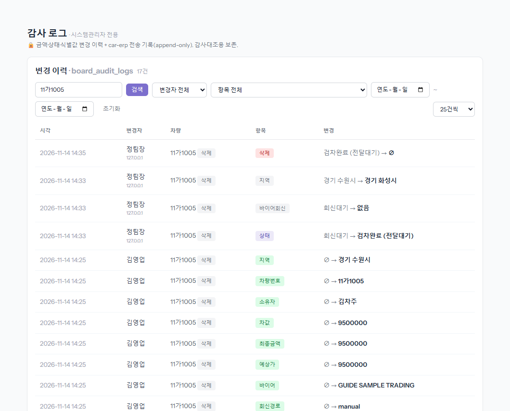
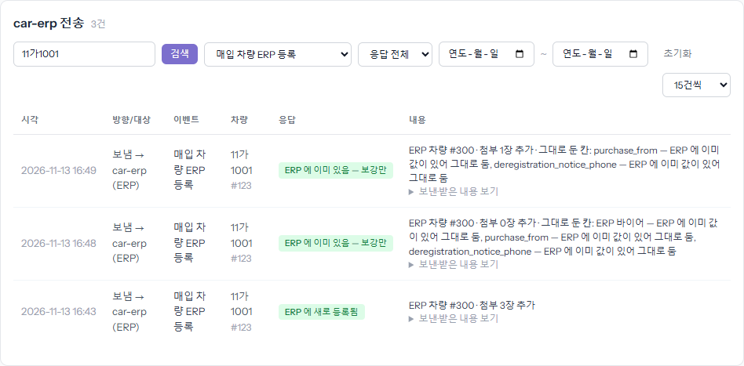

「이 값을 누가, 언제 넣었나」·「ERP 로 제대로 갔나」를 확인하는 화면입니다. 왼쪽 메뉴 「감사 로그」에서 엽니다.
업무관리자 이상만 볼 수 있습니다. 기록은 지우거나 고칠 수 없습니다.
① 변경 이력 — 누가 무엇을 바꿨나
1단계
검색칸에 차량번호를 적고 [검색]
차량번호·변경자 이름·값으로 찾습니다. [검색] 또는 Enter 를 눌러야 찾습니다. 옆 칸으로 변경자·항목(지역·상태·차값 등)·날짜를 더 좁힐 수 있고, [초기화]로 풉니다. 지운 차도 찾아집니다(차량번호 옆 「삭제」 표시).

2단계
한 줄 = 칸 하나가 바뀐 기록입니다
- 「시각」·「변경자」(아래 작은 숫자는 접속한 곳의 주소) · 「항목」 · 「변경」(이전 값 → 새 값).
- 초록 항목에 「∅ → 값」인 줄은 등록할 때 처음 적은 값입니다. 예시에서 지역 「경기 수원시」는 김영업이 등록 때 적었고, 정팀장이 14:33 에 「경기 화성시」로 고쳤습니다.
- 보라 항목은 상태 변경, 빨강은 삭제입니다. 변경자가 「시스템」이면 사람이 아니라 자동 처리(ERP 응답·검차 연동 등)가 바꾼 것입니다.
계좌번호·여권 번호 같은 값은 여기서도 가려져 남습니다.
② car-erp 전송 — ERP 로 제대로 갔나
3단계
아래 「car-erp 전송」 표에서 차량번호로 찾습니다
board 가 ERP(와 사내 AI 등)에 보낸 기록입니다. 「이벤트」로 종류(매입 차량 ERP 등록·포털 요청·선적요청·서명 요청 등)를, 「응답」으로 성공·실패를 거를 수 있습니다.
- 「응답」 — 「ERP 에 새로 등록됨」은 처음 넘어간 것, 「ERP 에 이미 있음 — 보강만」은 다시 보내 빈 칸·사진만 채운 것입니다. 빨간 칩이면 실패이니 「내용」의 사유를 봅니다.
- 「내용」 — ERP 차량 번호, 붙은 사진 장수, ERP 에 이미 값이 있어 그대로 둔 칸이 적힙니다. 「보낸·받은 내용 보기」를 누르면 실제로 오간 값이 펼쳐집니다.

알아 둘 것
- 「board 에 넣었는데 ERP 에 없다」면 먼저 전송 표에서 그 차를 찾습니다. 기록이 없으면 보낸 적이 없는 것이고, 실패면 사유대로 고친 뒤 「관리자」 화면의 [car-erp 재전송]으로 다시 보냅니다.
- ERP 에 이미 값이 있는 칸은 board 가 다시 보내도 바뀌지 않는 경우가 많습니다(「그대로 둔 칸」). 그때는 ERP 에서 직접 고칩니다.
- 업무 가이드 챗봇 질문은 이 표에 나오지 않습니다.